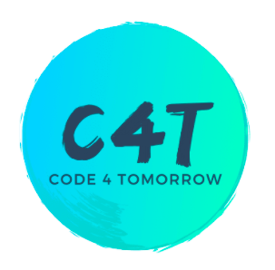
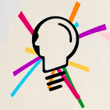

Vaishali Jha
Welcome to my Website
Photography
My Passion (@vashuj_life) January 10, 2021
The best concept of technology is the research and transformation of human-made methods, tools and machines. Technology helps people to research and improve the physical elements that are present in their lives. So, you might be wondering what life was like in the older days, maybe the 1980s or the 2000s, but whatever we're facing right now, no one has ever faced it before, particularly being stuck with technology at home. People attend online courses all over the world as a result of the coronavirus pandemic. My experience with this has been a roller coaster. But, you know, we're trapped here at home, exposed to the outside world, we don't have anywhere to go.
Leadership & Volunteer Services
BSA Leader, FTC Athena Robotics #9657, Tutor for local Middle Schoolers (Chaboya Middle School & Quimby)
Volunteered for over 200 hours within six months
January 2, 2021
Dance
Leela Youth Dance Company: Professional Kathak Troop
January 2, 2021LYDC is an elite pre-professional troupe, ages 12-18, under the tutelage and artistic direction of kathak artist, Rachna Nivas, and Assistant Director, Ahana Mukherjee. The program champions excellence in dance, youth leadership, and creative discovery. Students rigorously train 5 hours/week in addition to home practice. CYDC has performed nationally in numerous prestigious venues and festivals, including the WorldWideWomen's Girl's Festival, San Francisco Museum of Modern Art, San Francisco Symphony Hall alongside students of the San Francisco Ballet, Philadelphia Youth Festival, International Kathak Festival in Chicago, and many others. CYDC also serves as a platform for teens to become advocates and rising young leaders in the arts and to be a part of a global movement to elevate and keep relevant Kathak and classical Indian art.

About Vaishali
Resume
High School Student
Bay Area, CA
vashuddsj@gmail.com
(669)203-1143
Skills
Programming
Marketing
Communication
Media
Languages
English
Hindi
Spanish
Tags
Resume Gaming Life India DIY Ideas Music Family News Mental Health Scouts
-

Volunteer Management Lead
Code 4 Tomorrow October 2020 - Present -

Director
NextGenKids4u June 2019 - Present